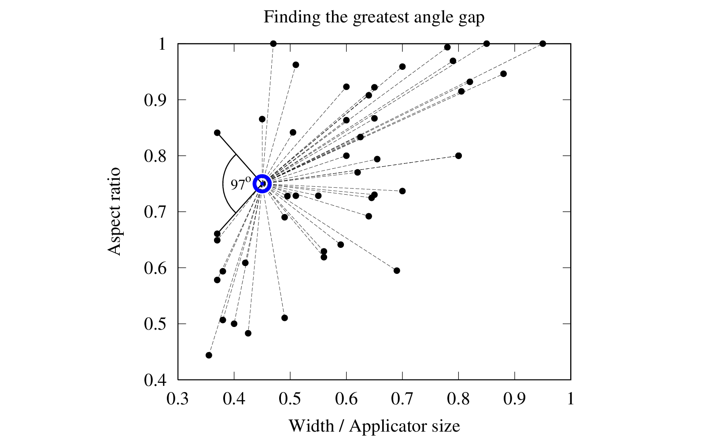
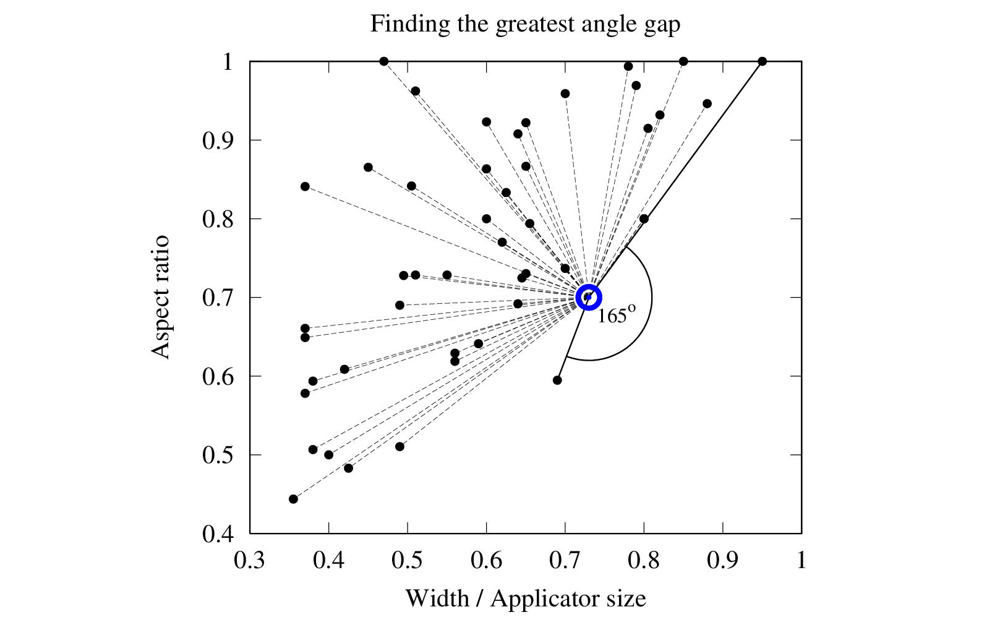
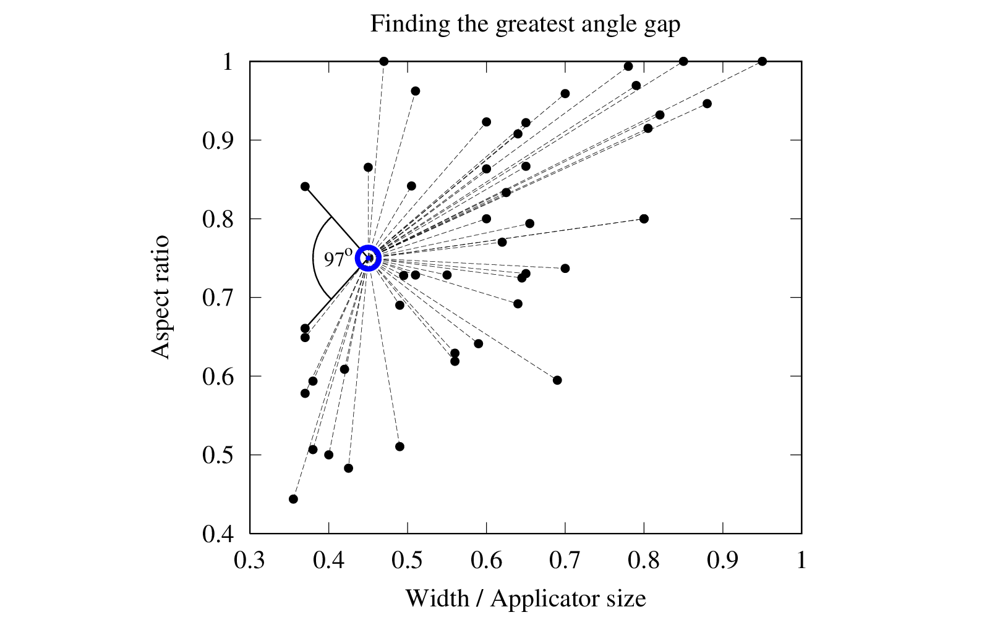
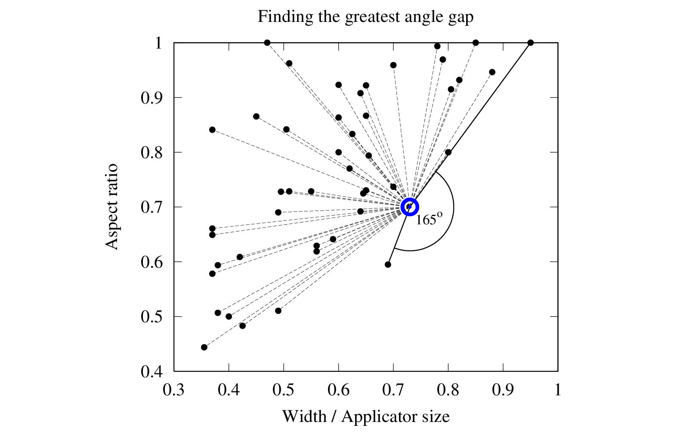

Modelling Electron Cut-out Factors
QUT Masters Thesis Presentation
by Simon BiggsOverview
- General topic background
- Output factor formalism w.r.t. Monitor Units
- General topic background
- Linac, applicator, and insert
- Electron beam collimation system
- Scatter effects due to this collimation
- Concept of lateral scatter equilibrium
- Output factor formalism w.r.t. Monitor Units


- General topic background
- Output factor formalism w.r.t. Monitor Units


 


